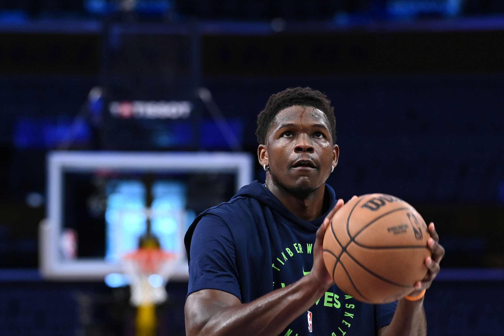

FAVORITE
Anthony Edwards
Nama Lengkap: Anthony DeVante Edwards
Tanggal Lahir: 5 Agustus 2001 (umur 22)
Tempat Lahir: Atlanta, Georgia, Amerika Serikat
Tinggi: 193 cm (6 ft 4 in)
Posisi: Shooting guard
Tim: Minnesota Timberwolves (NBA)
Nomor Punggung: 5
Tentang Anthony Edwards
Anthony Edwards adalah pemain basket profesional Amerika yang saat ini bermain untuk Minnesota Timberwolves di NBA. Dia dipilih sebagai pilihan pertama secara keseluruhan dalam Draft NBA 2020 oleh Timberwolves. Edwards dikenal dengan kemampuan mencetak poinnya yang eksplosif, atletisisme luar biasa, dan mentalitas kompetitifnya yang tangguh.
Statistik Karir (2023-2024)
25.9
Points Per Game
5.4
Rebounds
5.1
Assists
1.3
Steals
Prestasi & Penghargaan
NBA All-Star (2023, 2024)
NBA All-Rookie First Team (2021)
NBA Rising Stars Challenge MVP (2022)
Pemain Terbaik SEC (2020)
Alasan Menjadi Favorit
Saya mengidolakan Anthony Edwards karena:
- Gaya bermainnya yang energik dan penuh semangat
- Kemampuan mencetak poin yang spektakuler
- Mentalitas kompetitif yang kuat
- Kepribadiannya yang karismatik di luar lapangan
- Perkembangan pesat dari tahun ke tahun